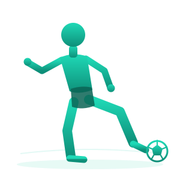

حرّك جسدك أنت
صورتان لحركتين تراهما كثيرًا. انظر إليهما ثم جرّب بنفسك.

قبل أن تقرأ سطرًا آخر، جرّب بنفسك: لُفّ ذراعك دائرة كاملة حول كتفك. ثم حاول أن تفعل الشيء نفسه بركبتك.
أيّهما تحرّك في اتجاهات أكثر — كتفك أم ركبتك؟
العظمان يلتقيان عند كتفك ولا ينفصلان مهما أدرتَ ذراعك. برأيك ما الذي يمسكهما معًا؟
إلى طاولة التشريح
أمامك ساق دجاجة. ستفتحها طبقةً طبقة وترى بنفسك ما بداخل المفصل.
في المختبر الحقيقي يحتاج هذا النشاط ساق دجاجة نيئة وقفّازات ومشرطًا ومقصّ تشريح وملقطًا ولوح تشريح — مع غسل اليدين قبل العمل وبعده، لأن الدجاج النيء قد يحمل بكتيريا. هنا ستفعل الشيء نفسه على الشاشة.
العظمان يدوران عند نقطة واحدة. ما الذي يوجد عند تلك النقطة؟
انقر على الساق لتزيح الطبقة التي فوقها.
الخطوة 0 من 6
الجزء الوردي عضلة. تابع طرفها بعينك — أين ينتهي؟
ظهر خيط أبيض قويّ يصل بين العضلة والعظم. ما الفائدة التي يؤدّيها هذا الخيط؟
بعد إزالة العضلات ظهرت مادة خيطية أخرى — لكنها تصل بين عظم وعظم لا بين عضلة وعظم. ماذا تفعل؟
تذكّر أنّ طرف العظم من الداخل عظم إسفنجي — وهذا ما يغطّيه من الخارج.
الوتر هو ما ينقل شدّ العضلة إلى العظم. توقّع: ماذا يحدث لحركة الطرف إذا تمزّق أحد الأوتار؟
والآن توقّع: ماذا يحدث للمفصل نفسه إذا تمزّق أحد الأربطة؟
لماذا لا تتآكل العظام؟
عظماك يتحرّكان على بعضهما آلاف المرّات كل يوم. ما الذي يحمي طرفيهما؟
في التشريح رأيتَ طبقة بيضاء ملساء تغطّي طرف العظم. توقّع: ماذا سيحدث لو تحرّك العظمان وهذه الطبقة مفقودة؟
مقدار الاحتكاك
راقب المؤشّر أعلاه قبل أن تضغط الزرّ ثانيةً.
قارن الحالات الثلاث. أي عبارة تصف ما رأيته؟
أمامك مقطع في ركبة. ضع كل اسم في موضعه من الرسم.
القوسان الرقيقان على جانبَي التجويف هما الغشاء الزلالي.
ما بنيتَه الآن اسمه المفصل الزلالي: المكان الذي يكون فيه الهيكل العظمي مرنًا ويتحرّك حول محور.
ما الذي يميّز المفصل الزلالي عن أي التقاء آخر بين عظمين في الجسم؟
أنواع المفاصل
مفصلان أمامك. اسحب طرف العظم في كلٍّ منهما بإصبعك، وانتبه إلى ما يسمح به كل شكل.
الكتف — اسحب العظم في أي اتجاه.
المرفق — جرّب سحب العظم في أي اتجاه.
انظر إلى شكل طرف العظم في الكتف: كرة تستقرّ داخل تجويف. ما الذي يسمح به هذا الشكل؟
والآن انظر إلى المرفق: طرف عظم يدور حول محور واحد كما يدور الباب. ما الذي يسمح به هذا الشكل؟
الكتف مفصل كروي، والمرفق مفصل رزّي.
صنّف هذه المفاصل الأربعة بحسب شكل طرف العظم فيها.
عُد إلى الصورتين في بداية الدرس: راقص العرضة يدير ذراعه في قوس واسع فوق كتفه، واللاعب يثني ركبته ثم يمدّها ليركل. أيّ وصف يطابق ما اكتشفته؟
أي جزء من جسمك تظنّ أنه يحوي أكبر عدد من المفاصل؟
| عدد المفاصل | الجزء من الجسم |
|---|---|
| 27 | اليد |
| 3 | المرفق |
| 3 | المعصم |
| 128 | العمود الفقري |
| 3 | الورك |
| 2 | الركبة |
| 33 | القدم |
هذه أعداد المفاصل كما وردت في كتابك. لا يُطلب منك حفظ أي رقم فيها — انظر إليها لترى أين تتجمّع المفاصل في جسمك.
ما العلاقة بين شكل طرف العظم عند المفصل وعدد اتجاهات حركته؟
حين يتلف الغضروف
الطبقة البيضاء الملساء ليست دائمة. ماذا يحدث حين تنقص؟
الغضروف طبقة ملساء تتآكل مع السنين ومع الإجهاد المتكرّر. توقّع: بماذا سيشعر صاحب المفصل؟
ما الذي تراه في المفصل المتضرّر ولا تراه في السليم؟
لاعب كرة قدم يركض ويقفز ويركل كل يوم. اشرح لماذا يزيد ذلك احتمال تلف غضروف ركبته.
حين يتلف مفصل الورك تلفًا شديدًا، يُستبدل بمفصل صناعي: كرة معدنية تستقرّ في تجويف مصنوع من بلاستيك خاصّ شديد الملاسة.
لماذا اختير البلاستيك للتجويف بدل المعدن؟
التقييم الختامي
عشرة أسئلة، ومحاولة واحدة لكلّ سؤال. وفي نهايتها شهادتك باسمك.
هذا هو التقييم الختامي لهذا الدرس. لكلّ سؤال محاولة واحدة، وبعد آخر سؤال تظهر نتيجتك وشهادتك. خذ وقتك.
1 ما النسيج الذي يربط العضلات بالعظام؟
2 ما النسيج الذي يربط العظام بعضها ببعض؟
3 ما وظيفة الغضروف؟
4 رياضي تمزّق أحد أربطة ركبته. ما الأثر الأرجح؟
5 لماذا يحتاج المفصل إلى السائل الزلالي؟
6 أيّ زوج من المفاصل يتحرّك في اتجاه واحد فقط؟
7 راقص العرضة يدير ذراعه في قوس واسع فوق كتفه. ما الذي يجعل ذلك ممكنًا؟
8 شخص تآكل غضروف ركبته ويشكو ألمًا عند المشي. ما التفسير الأرجح؟
9 ما اسم النسيج الذي يغطّي طرف العظم فيقلّل الاحتكاك؟
10 اذكر مفصلًا واحدًا في جسمك يتحرّك في جميع الاتجاهات.